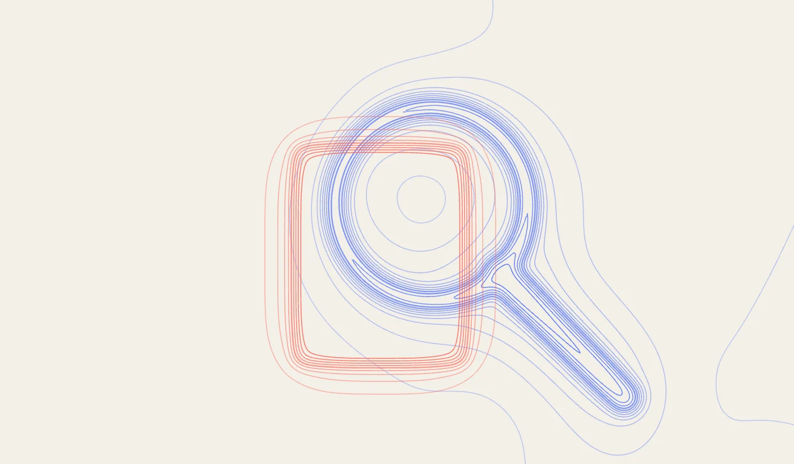
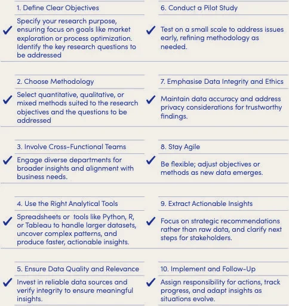
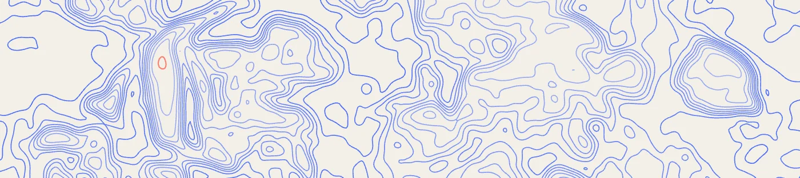

In today’s competitive environment, strategic decisions that shape the future of a company must be grounded in data and robust and rigorous analysis, not just assumptions and intuitions. For leaders, research enables decisions to be data-driven, forward-thinking, and aligned with market conditions. Whether it is expanding into new markets, developing new product lines, or enhancing operational efficiencies, research is not just a support function — it is a strategic asset.
But research is not just about crunching numbers — it’s about uncovering opportunities, challenging norms, and shaping strategies that drive sustainable growth. This article explores how a research-first approach helps organisations adapt and thrive in a rapidly evolving world, offering insights into embracing this research-first mindset.

Why Research?
Research Creates Value
Research brings a depth of expertise that enables businesses to go beyond surface-level analysis. Researchers not only have the skills and tools to conduct rigorous research, they also have the ability to explore the causes of problems more deeply and come up with more creative solutions.
By delving into complex problems, uncovering hidden insights, and delivering actionable recommendations, research empowers smarter decisions.By embedding research into decision-making, organisations can uncover transformative insights and create a competitive edge. With these insights, research is a catalyst for innovation and the cornerstone of a resilient business strategy. When executed effectively, research translates directly into measurable business outcomes, such as faster product launches, higher adoption rates, operational efficiency, and robust innovation pipelines. The strategic advantage that research brings is the value that it adds. Example Applications of Research
1. Product and Market Development
Innovation in product and market development begins with understanding your customers — not just who they are but what drives them.
Research Activities:
Market analysis, user behaviour studies, technical feasibility assessments
Competitor analysis, patent landscaping, and trend forecasting
Demographic studies, cultural adaptation research, and economic forecasting
Tangible Outcomes:
Faster and successful product launches tailored to market needs, with reduced time-to-market
Development of unique selling propositions, first-mover advantages, and successful patent applications
Increased market share through culturally adapted products and effective market entry strategies
2. Organisational Transformation
True transformation demands rethinking how organisations engage with both their workforce and technology.
Research Activities:
Process optimization studies, benchmarking, productivity and employee satisfaction analysis
Studies on interdepartmental coordination and communication improvement
Innovation metrics research and implementation of R&D processes
Tangible Outcomes:
Streamlined operations, cost savings, and enhanced employee performance
A stronger innovation pipeline and improved collaboration across departments
Measurable innovation outcomes that drive sustainable growth
Cutting-edge Research Skills
Cutting-edge research is highly context-driven, requiring tailored methods and techniques suited to the specific discipline or challenge at hand.
Key attributes include:
Systematic approaches: A structured, methodical process ensures rigour and consistency.
Ethical rigour: Emphasis on “knowledge ethics” to maintain integrity and transparency.
Analytical robustness: Analysis that stands testing.
Critical thinking: Ability to evaluate assumptions, identify biases, and develop original hypotheses.
Deep expertise: Leveraging extensive background knowledge to navigate complex, unstructured problems.
Adaptive methodologies: Tailoring methods to address unique research questions and operational challenges.
Today, ethical research is non-negotiable, with organisations needing to address privacy, bias, and transparency to build trust. Skilled researchers do not just accept anything at face value but scrutinise the integrity and reliability of data and information sources and theoretical and methodological approaches. This builds reliable foundations with assumptions and claims appropriately verified and justified. By challenging traditional models and navigating ambiguity, advanced research drives innovation and delivers impactful, actionable results.
Opportunities
Cutting-edge research techniques take insights to the next level, uncovering patterns and solutions that traditional approaches may miss.
Some examples:
1. Advanced Survey Designs and Analysis
Create smarter, bias-resistant surveys that yield cleaner, more actionable data. By integrating insights, sophisticated question framing, and rigorous validation processes, researchers can capture more nuanced, accurate, and actionable information across complex research domains.
2. AI and Data Science
In fast-evolving fields, like artificial intelligence and data science, universities like Oxford are partnering with industry leaders to gain access to data sets and cutting-edge AI research platforms.
3. Blending Perspectives
Fuse the precision of quantitative data with the richness of qualitative insights, delivering a more holistic understanding of complex challenges. Example: Combining hard numbers with customer interviews can reveal not just what’s happening but why it matters.
4. Breaking Silos
The Power of Integration: An interdisciplinary approach: for example, combining expertise in the social sciences, data science, engineering to tackle multifaceted issues—from decoding user behavior to solving sustainability puzzles.
5. Track/Outcome Analysis
Track your progress through rigorous analysis that systematically monitors progress, evaluates outcomes, and enables data-driven adjustments. By establishing clear metrics, collecting feedback, and maintaining an adaptive learning loop, organizations can optimize performance, reduce uncertainty, and make more informed decisions.
Top Ten Tips
Running an internal research project can be highly rewarding, but it requires careful planning and execution to yield actionable insights. Here are ten tips to help organisations run their own research projects:

Research checklist
Conclusion
Research.Rethink.Transform
In an era of unprecedented complexity and rapid change, research is no longer a peripheral function but a core strategic capability. By embracing rigorous, innovative, and ethical research methodologies, organizations can transform uncertainty into opportunity, converting data into actionable insights that drive sustainable growth, innovation, and competitive advantage.

Appendices
Appendix 1: Illustrative Case Study: Market Research for an Enterprise Sustainability Platform
An example 8-week project plan, main deliverables and client benefits
Weeks 1-2: Research Design & Foundation
- Clarify research objectives
- Identify motivations/constraints/lessons from previous market expansion
- Define market size and structure
* Identify key players
* Identify influencers/reference sites
* Map client needs and drivers (growth, cost savings, compliance)
- List client’s platform functionality, gaps, and future developments
* Document specialties/expertise
* Map onboarding costs/activities
- Review previous marketing strategies
* Analyse client segmentation/targeting
* Review campaign strengths/weaknesses
* Document key messages
Weeks 3-4: Primary Research
- 25-30 in-depth interviews across stakeholders
- 3-4 focus groups with end users
- Client needs survey implementation
- Analyze client needs vs platform solution
* Identify strengths
* Identify gaps
- Document regulatory landscape and trends
* Map mandatory requirements
Weeks 5-6: Analysis & Testing
- Competitor landscape analysis
* Compare alternative platforms
* Compare alternative solutions
* Analyse pricing strategies
- Run validation workshops
- Test assumptions and pricing models
- Ensure active stakeholder collaboration
- Provide ongoing training/knowledge transfer
Week 7: Strategy Development
- Run "pre-mortem" analysis
* Identify problems, risks, barriers
* Map dependencies
- Develop implementation plan
- Create risk mitigation strategy
- Define immediate next steps
- List longer-term options
Week 8: Final Delivery
- Final report preparation and presentation
- Implementation roadmap
- Project management wrap-up
* Document lessons learned
* Create end-of-project to-do list
* Schedule 2-week follow-up
- Ensure knowledge transfer complete
- "Finish well" activities
Main Deliverables
1. Strategic market assessment
Sizing, growth projections, emerging trends, and scenario modeling
Competitive and innovation landscape mapping, identifying disruptive forces and partnership opportunities
Regulatory requirements and market barriers, and research to identify high-value opportunities
2. Implementation Roadmap
Phased market entry strategy with technical integration blueprint and success metrics
Resource and capability planning including skills assessment, partner ecosystem development, and scalability requirements
Risk management and governance framework covering contingency planning, stakeholder alignment, and change management
3. Actionable Recommendations
Differentiated go-to-market approach combining pricing strategy, feature prioritization, and clear value propositions
Customer strategy covering acquisition, retention, and growth initiatives with measurable ROI
Implementation success framework including KPIs, communication strategy, and long-term sustainability plan
Client Benefits
1. De-risked Market Entry
Accelerate confident investment and market entry decisions through validated data and clear ROI projections.
2. Accelerated Time-to-Market
Reduce implementation time and costs by avoiding technical pitfalls and regulatory obstacles.
3. Revenue Growth
Drive revenue growth through targeted customer acquisition strategies and optimized pricing models.
4. Competitive Advantage
Capture first-mover advantage by identifying unmet customer needs and emerging market opportunities ahead of competitors. Build a sustainable competitive advantage with a scalable market position and early warning system for threats.
Appendix 2: koralli bonus
Academic researchers have access to resources (eg., data, research papers, leading experts) that most professionals do not consider or have easy access to. This can range from academic to governmental or industry databases, as well as access to world-leading expertise and engagement.
a. Academic Databases
Through academic affiliations, researchers can tap into databases such as JSTOR, ScienceDirect, and IEEE Xplore, which house cutting-edge research from around the world. With appropriate use and licence, this provides access to the latest studies and findings in areas, such as artificial intelligence, sustainability and economics. The insights in such research may take years before appearing in mainstream business reports.
b. Government and Industry Data Sets
Researchers often have access to government and industry-specific data, for example, databases from organisations like the OECD, World Bank, and Wharton Research Data Services (WRDS) contain extensive information on economic trends, regulatory shifts, and market data, providing businesses with a strategic edge in areas like market expansion and emerging regulatory concerns.
c. World-Leading Expertise and Engagement
Researchers benefit from access to global experts—professors, top researchers, and industry specialists who lead cutting-edge developments in their fields. Through seminars, academic conferences, and expert lectures, they gain first-hand insights into the latest theories, methodologies, and innovations before they reach broader audiences. These interactions allow researchers to stay ahead of industry trends and apply advanced insights to their work. This access to a network of world-leading thinkers is invaluable, allowing them to integrate pioneering ideas and set a competitive research benchmark for their projects.
Appendix 3: References
The Importance of Research in the Advancement of Knowledge and Society
International Research Journal of Basic and Clinical Studies Vol. 8(4) pp. 1-3, August, 2023
Defining impact, UK Research and Innovation, June 2022
https://www.ukri.org/councils/esrc/impact-toolkit-for-economic-and-social-sciences/defining-impact/
The Impact of R&D and Technology Diffusion on Productivity Growth: Evidence for 10 OECD Countries in the 1970s and 1980s
40 Years of EU Research and Innovation